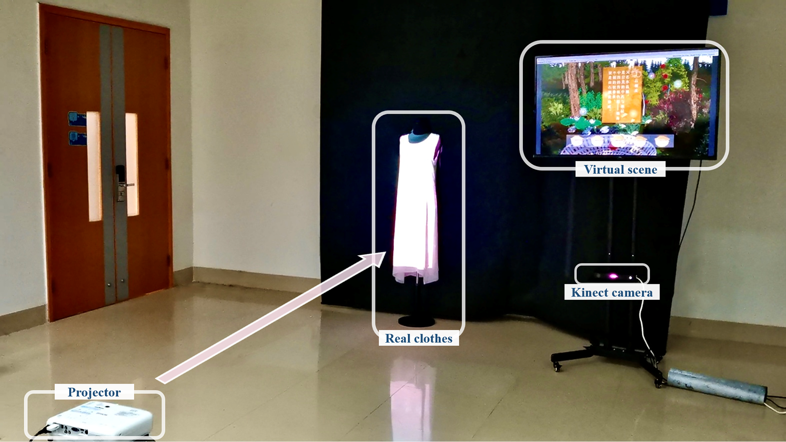
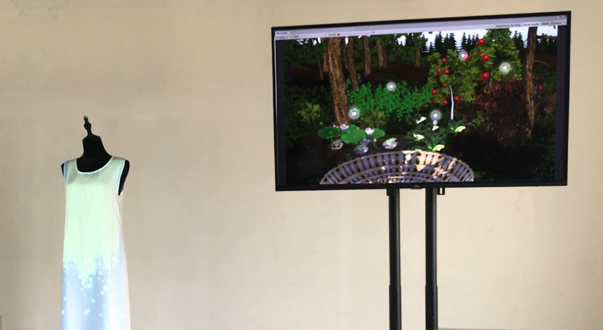

Evergreen: Somatosensory Interactive Space for Plant Dyeing Experience
Keywords: Somatosensory Interaction; Digital Art; Natural Dyeing; Mixed Reality; Cultural Heritage
• 2019/10 - 2020/01
Evergreen is an interactive art providing digital natural dyeing (草木染) experience.
Concept
Using the somatosensory controlling method, through the designed interaction process,
users can enjoy the journey of extracting plant components from the natural environment, toning colors, making dyes, and painting patterns on clothes.
During interaction, people could quickly understand the complete procedure of natural dyeing, refocusing on this traditional acient craft.
Under the effect of automation and industrailization reaching to every corner of daily life,
this interaction aimed to arise people's awareness about the positive significance of human health and environmental protection,
and feel the simplicity and natural beauty of the works of ancient dyeing, realizing the inner peace and human-nature harmony.
Technical Approach
- Motion detection: a Kinect tracks human movement, processing joint points and depth data
- Unity3D presents the virtual forest scene, including material plants, knowledge of natural dyeing, and color selection panels.
- Projector displays visual effects on the physical dress
- Participants can drag plants in virtual scene to view informative contents, select colors, and dye colors to a physical cloth.

Experimental installation & trial operation of EvergreenOutputs
- Exhibited as invited artwork in Jiahe public art gallery of Xiamen City (Jan, 2020).
- This work was orally presented on the AHFE (2023) International Conference, and published in AHFE Open Access, vol 77.
Publication
-
H. Hong, W. Lin, G. Li, H. H. Kobayashi, Y. She, Y. Chen, P. Xiao, Y. Fu, J. Lei. (2023)
"A Mixed Reality Transformation for Experiencing Plant Dyeing", Ergonomics In Design, 77(77), doi: 10.54941/ahfe1003426
Gallery

